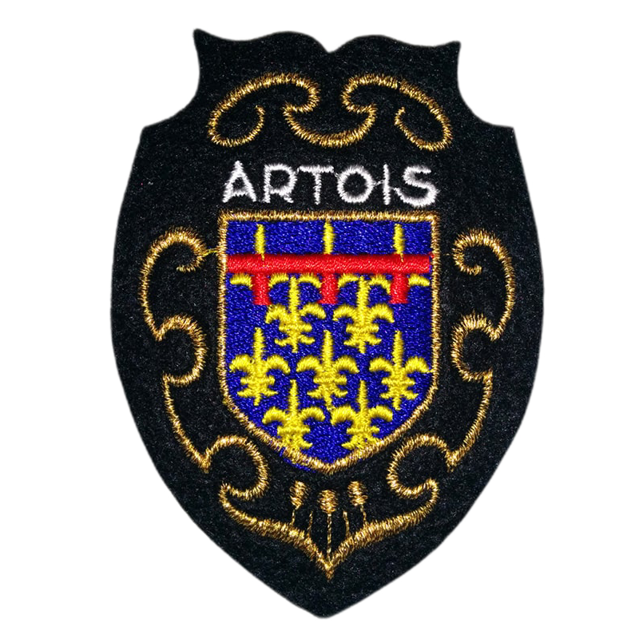
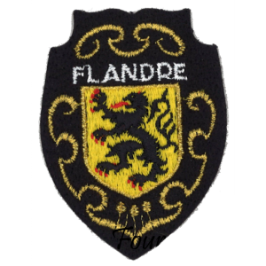

Les villes proches
| Blason | Ville | Couleurs | Province |
 |
Abbeville | Bleu roi et rouge |

|
 |
Amiens | Bleu roi et rouge | |
 |
Arras | Rouge et bleu |  |
| Beauvais | Rouge et blanc | |
|
 |
Compiègne | Bleu roi et or | |
|
Creil | Bleu roi et or | |
 |
Doullens | Bleu roi et or | |
| Hirson | Bleu et blanc | |
|
 |
Laon | Bleu et blanc | |
| Lille | Rouge et blanc |  | |
 |
Noyon | Rouge et blanc | |
 |
Paris | Bleu roi et rouge |  |
| Reims | Bleu et blanc | ||
 |
Rouen | Bleu roi et rouge | |
 |
Saint-Quentin | Bleu et blanc | |
 |
Senlis | Rouge et or | |
 |
Soissons | Bleu et blanc | |
| Valenciennes | Rouge et or |
Les provinces
| Blason | Province | Couleurs |
| Artois | Bleu roi et or | |
| Champagne | Bleu et blanc | |
| Flandres | Jaune et noir | |
|
Ile de France | Bleu roi et rouge |
| Normandie | Rouge et or | |
|
Picardie | Bleu et blanc |